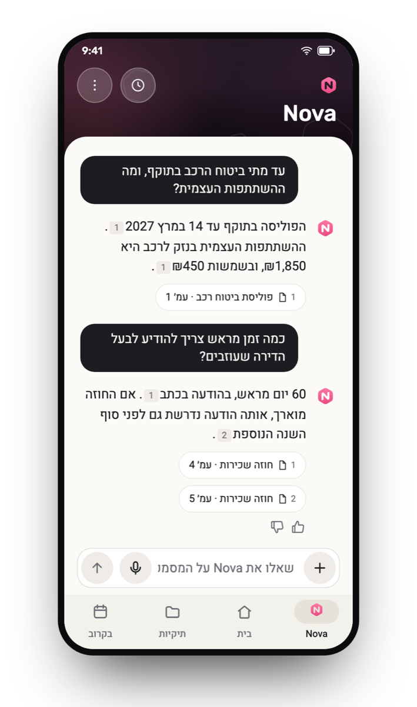
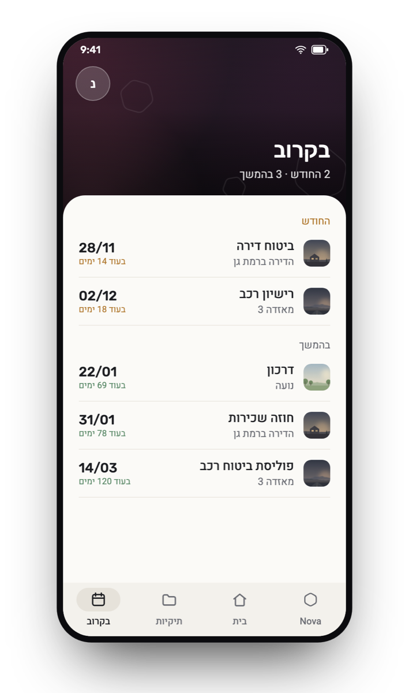

מעלים מסמך או מצלמים אותו, ונובה קוראת אותו בשבילכם: מוצאת את התאריכים, הסכומים והפרטים החשובים, ומסדרת אותו בתיקייה הנכונה. אחר כך פשוט שואלים, בכתב או בקול.
Upload a document or snap a photo of it, and Nova reads it for you: she finds the dates, the amounts and the details that matter, and files it in the right folder. Then you just ask, by typing or out loud.
All your paperwork, in one place that understands it
קוראת ומסדרת
Reads and files
PDF או תמונה (JPEG, PNG, WebP, HEIC). נובה מוצאת תאריכים, סכומים ופרטים, ומתייקת כל מסמך בתיקייה של הרכב, הדירה או האדם שהוא שייך אליו.
A PDF or a photo (JPEG, PNG, WebP, HEIC). Nova finds the dates, amounts and details, and files each document in the folder of the car, home or person it belongs to.
עונה, ומראה מאיפה
Answers, with the source
שואלים על המסמכים, ונובה עונה מתוכם ומראה באיזה מסמך ובאיזה עמוד מצאה את התשובה.
Ask about your documents, and Nova answers from them, showing which document and page the answer came from.
מדברת איתכם
Talks with you
אפשר פשוט להתקשר אליה ולשאול. נובה עונה בקול, ואפשר לקטוע אותה כמו בשיחה רגילה.
You can simply call her and ask. Nova answers out loud, and you can interrupt her like in any conversation.
בקרוב
Coming up
מסך אחד שמרכז את תאריכי התפוגה והחידוש מכל המסמכים, כדי שתראו מראש מה מתקרב.
One screen that gathers the expiry and renewal dates from all your documents, so you see what's coming.
ככה זה נראהSee it
נובה, מקרוב
Nova, up close

שואלים, ונובה עונה עם מקורAsk, and Nova answers with the sourceכל הפרטים מכל מסמךEvery detail from every document

רואים מראש מה עומד לפוגSee what's about to expireפשוט מדברים איתהJust talk to her
מסכים לדוגמה, עם מסמכים לדוגמה.
Sample screens, with sample documents.
המחשבות של נובהNova's thoughts
נובה שמה לב בשבילכם
Nova notices things for you
אחרי שנובה קוראת מסמך, היא לפעמים מוצאת בו פרט שלא חיפשתם, ומספרת לכם בלי שביקשתם: כיסוי שלא ידעתם שיש לכם, אפשרות להאריך חוזה, תנאי שמסתתר בעמוד 3.
After Nova reads a document, she sometimes finds a detail you weren't looking for and tells you, unasked: cover you didn't know you had, an option to extend a contract, a condition hiding on page 3.
רק מה שכתוב. כל מחשבה נשענת על שורה מהמסמך, ונובה מראה לכם בדיוק איזו.Only what it says. Every thought rests on a line in the document, and Nova shows you exactly which.
בלי עצות. היא מספרת מה כתוב, ולא אומרת לכם מה לעשות.No advice. She tells you what it says, never what to do.
בשליטתכם. לא מעניין אתכם? מכבים את המחשבות בהגדרות.Your call. Not for you? Turn thoughts off in Settings.
לנובה יש מחשבהNova has a thought
הפוליסה מכסה גם שמשות ומראות, עד ₪1,500 לתביעה.
The policy also covers windows and mirrors, up to ₪1,500 a claim.
פוליסת ביטוח רכב · עמוד 2Car insurance policy · page 2לנובה יש מחשבהNova has a thought
לפי החוזה אפשר להאריך את השכירות בשנה נוספת, אם מודיעים עד 60 יום לפני הסיום.
Under the contract, the lease can be extended by another year if you give notice 60 days before it ends.
חוזה שכירות · עמוד 3Lease agreement · page 3לנובה יש מחשבהNova has a thought
האחריות מתארכת לשנתיים כשרושמים את המוצר באתר היצרן בתוך 30 יום מהקנייה.
The warranty extends to two years when the product is registered on the maker's site within 30 days of purchase.
תעודת אחריות · עמוד 1Warranty certificate · page 1
הצטרפו לקהילת הבודקים הראשונים שלנו
Join the community of our first testers
נסו את נובה לפני כולם, וספרו לנו מה אתם חושבים.
Try Nova before anyone else, and tell us what you think.
אתם מנהלים את העניינים, ואתם מחליטים מי עוד רואה אותם. משתפים תיקייה, ומי שקיבל אותה יכול לשאול את נובה בעצמו, במקום לשאול אתכם.
You run things, and you decide who else gets to see them. Share a folder, and whoever you share it with can ask Nova themselves, instead of asking you.
בני ובנות זוג
Partners
תיקיית השיפוץ עם הצעות המחיר וחוזה הקבלן, או חוזה השכירות או הליסינג: שניכם רואים את אותם מסמכים, ושניכם יכולים לשאול את נובה.
The renovation folder with the quotes and the contractor's agreement, or the rental or leasing contract: you both see the same documents, and you can both ask Nova.
בעלי דירות, שוכרים ושותפים
Landlords, tenants and roommates
בעל הדירה והשוכר רואים את אותו חוזה, את הביטוח ואת הקבלות, ושניהם יכולים לשאול את נובה מתי מתחדש החוזה או מה כלול בשכר הדירה. גם שותף לדירה יכול לחלוק איתכם כך את החשבונות.
The landlord and the tenant see the same lease, insurance and receipts, and both can ask Nova when the lease renews or what the rent includes. A roommate can share the bills with you the same way.
עורכי דין ויועצים
Lawyers and advisors
משתפים עם הלקוח את התיקייה שלו, והוא שואל את נובה במקום להרים אליכם טלפון על כל שאלה קטנה. תנו ללקוחות שלכם את הכוח של נובה.
Share a client's folder with them, and they ask Nova instead of calling you about every little question. Give your clients the power of Nova.
אתם בשליטה
You're in control
משתפים בהזמנה במייל, תיקייה אחת עם אדם אחד. כל אחד מהצדדים יכול לצאת מהתיקייה בכל רגע, ותיקיית כספת אף פעם לא משותפת.
You share by email invitation, one folder with one person. Either of you can leave the folder at any time, and a vault folder is never shared.
פרטיותPrivacy
אצלנו, הפרטיות שלכם קודמת לכל
At Nova, your privacy comes first
הכספת
The vault
תיקיות רגישות, כמו דרכונים או מסמכים רפואיים, נכנסות לכספת. היא נעולה, אפילו בפני נובה, עד שאתם פותחים אותה בסיסמה או בטביעת אצבע. אחרי 10 דקות היא ננעלת שוב מעצמה, והיא אף פעם לא משותפת.
Sensitive folders, like passports or medical papers, go in the vault. It stays locked, even to Nova, until you open it with your password or fingerprint. After 10 minutes it locks again by itself, and it is never shared.
שומרים על הכניסה לחשבון
Guarding the way in
קוד אימות למייל בהרשמה.A verification code to your email when you sign up.
מייל על כל כניסה ממכשיר חדש, עם שם המכשיר.An email for every sign-in from a new device, naming the device.
סיסמה שגויה מאטה את הניסיונות הבאים, במקום לנעול אתכם מחוץ לחשבון.A wrong password slows down the next tries, instead of locking you out.
אפשר להוסיף אפליקציית אימות, שמבקשת קוד בכל כניסה מטלפון חדש.You can add an authenticator app, which asks for a code on every new phone.
לפני פעולה רגישה, כמו מחיקת החשבון, נובה מבקשת שוב את הסיסמה.Before a sensitive step, like deleting your account, Nova asks for your password again.
רק אתם, ומי שאתם משתפים איתו תיקייה, רואים את המסמכים.Only you, and anyone you share a folder with, can see your documents.
המסמכים שלכם לא משמשים לאימון מודלים של בינה מלאכותית.Your documents are not used to train AI models.
המידע נשמר בשרתים באיחוד האירופי, וכל התקשורת מוצפנת.Your data is stored on servers in the EU, and all traffic is encrypted.
אפשר למחוק מסמך, או את כל החשבון, בכל רגע.You can delete a document, or your whole account, at any time.